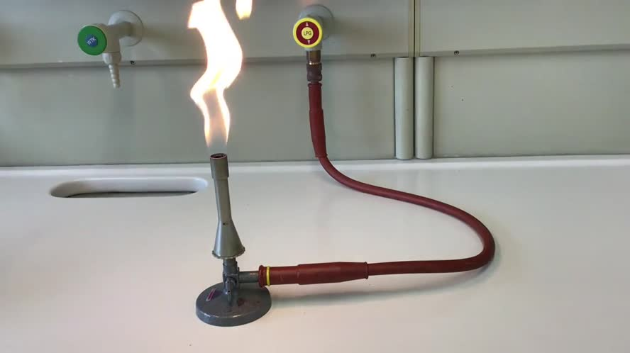

MINT
am KFG
Willkommen auf der MINT-Seite über das KFG! Hier erfahren Sie alles über die faszinierende Welt der Mathematik, Informatik, Naturwissenschaften und Technik. Unser MINT-Programm bietet eine fundierte und abwechslungsreiche Ausbildung, die Schülerinnen und Schüler auf die Herausforderungen und Chancen der modernen Welt vorbereitet. Erfahren Sie mehr über unseren Lernstoff, die AGs, die Ausstattung und die spannenden Wettbewerbe, an denen unsere Schülerinnen und Schüler teilnehmen.
Hier können Sie aus verschiedenen Kategorien wählen, um detaillierte Informationen über die einzelnen Bereiche des MINT-Programms des KFGs zu erhalten. Ob Sie sich für den Lernstoff, die spannenden Arbeitsgemeinschaften (AGs), die moderne Ausstattung oder die herausfordernden Wettbewerbe interessieren – hier finden Sie alles Wissenswerte auf einen Blick. Klicken Sie einfach auf die gewünschte Kategorie, um mehr zu erfahren und in die Welt der Mathematik, Informatik, Naturwissenschaften und Technik einzutauchen.
Kategorien:
.jfif)
Lernstoff
Grundlagen
Vertiefung
Praxisnähe

AGs

Ausstattung
Labore
Sammlungen
Computer
Wettbewerbe
MathematikOlympia
InformatikBiber
KänguruWettbewerb
Wozu dient diese Webseite?
Die Website soll als umfassende Informationsplattform für das KFG dienen. Sie bietet Schülern, Eltern und Lehrern aktuelle und relevante Informationen zu schulischen Aktivitäten, Projekten und besonderen Auszeichnungen. Durch gut strukturierte und ansprechend gestaltete Inhalte zu Themen wie den MINT-AGs, der Ausstattung der Schule und besonderen Schülerleistungen wird die Website zu einem wertvollen Werkzeug für die Schulgemeinschaft. Zudem fördert sie den Austausch und die Vernetzung innerhalb der Schule und darüber hinaus, indem sie Einblicke in besondere Initiativen wie das Netpiloten-Projekt und die Zusammenarbeit mit Hochschulen gibt. Ziel ist es, die vielfältigen Möglichkeiten und Erfolge des KFGs sichtbar zu machen und das Engagement aller Beteiligten zu würdigen.